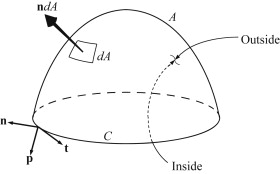

Stokes’ theorem relates the integral over an open surface \( A \) to the line integral around the surface’s bounding curve \( C \). Unlike Gauss’ theorem, the inside and outside of \( A \) are not well defined so an arbitrary choice must be made for the direction of the
outward normal \( \mathbf{n} \) (here it always originates on the outside of \( A \)).
Once this choice is made, the unit tangent vector to \( C \), \( \mathbf{t} \), points in the counterclockwise direction when looking at the outside of \( A \).
The final unit vector, \( \mathbf{p} \), is perpendicular to the curve \( C \) and tangent to the surface, so it is perpendicular to \( \mathbf{n} \) and \( \mathbf{t} \). Together the three unit vectors form a right-handed system:
\(
\mathbf{t} \times \mathbf{n} = \mathbf{p}
\)
For this geometry, Stokes’ theorem states
\[
\iint_A (\nabla \times \mathbf{u}) \cdot \mathbf{n} \, dA = \int_C \mathbf{u} \cdot \mathbf{t} \, ds
\]
Illustration of Stokes’ theorem for surface \( A \) bounded by the closed curve \( C \). For the purposes of defining unit vectors, the inside and outside of \( A \) must be chosen. The unit vector \( \mathbf{n} \) is perpendicular to \( A \) and originates from the outside of \( A \). The unit vector, \( \mathbf{t} \), is locally tangent to the curve \( C \). The unit vector \( \mathbf{p} \) is perpendicular to \( C \) but is locally tangent to the surface \( A \) so that it is perpendicular to both \( \mathbf{n} \) and \( \mathbf{t} \). The unit vectors \( \mathbf{n} \), \( \mathbf{t} \), and \( \mathbf{p} \) define a right-handed triad of directions, \( \mathbf{t} \times \mathbf{n} = \mathbf{p} \)
This theorem signifies that the surface integral of the curl of a vector field \( \mathbf{u} \) is equal to the line integral of \( \mathbf{u} \) along the bounding curve of the surface. In fluid mechanics, the right side of \(\iint_A (\nabla \times \mathbf{u}) \cdot \mathbf{n} \, dA = \boxed{\int_C \mathbf{u} \cdot \mathbf{t} \, ds}\) is called the circulation of \( \mathbf{u} \) about \( C \). In addition, \(\boxed{\iint_A (\nabla \times \mathbf{u}) \cdot \mathbf{n} \, dA = \int_C \mathbf{u} \cdot \mathbf{t} \, ds}\) can be used to define the curl of a vector through the limit of the circulation about an infinitesimal surface as \[ \mathbf{n} \cdot (\nabla \times \mathbf{u}) = \lim_{A \to 0} \frac{1}{A} \int_C \mathbf{u} \cdot \mathbf{t} \, ds \]